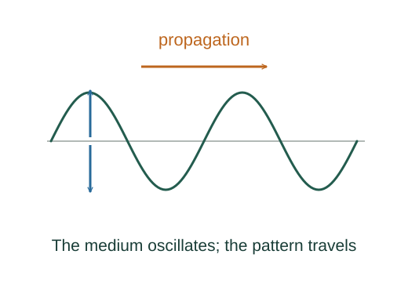

Derive wave speed on a stretched string
String tension supplies a transverse force when a short segment is curved. Newton’s law links that curvature to transverse acceleration, producing the wave equation.
What the symbols mean
𝒯: approximately constant string tension (N); μ: mass per unit length (kg/m); y(x,t): small transverse displacement.
When this applies
Uniform flexible string, small slopes, approximately constant tension, negligible damping and bending stiffness.
Developing the argument

Isolate a short segment
A segment of length dx has mass μdx. Equal tensions at its ends point along slightly different tangents, giving a small net transverse force.
Express force through slope change
For small angles, the transverse tension component is approximately 𝒯 ∂y/∂x. The difference of its values at the two ends is curvature times 𝒯dx.
Apply Newton’s second law
Equate transverse force to segment mass times transverse acceleration. Cancel dx.
Identify the propagation speed
For a travelling shape y = f(x − vt), two time derivatives give v²f″ and two space derivatives give f″. Substituting leaves v² = 𝒯/μ.
A closer lookHow do position and time derivatives differ? ↗Velocity and acceleration from derivativesA worked example
A string at 100 N tension with μ = 0.010 kg/m carries small transverse waves at 100 m/s. Increasing tension by four doubles the speed.
Derivation behind this calculation ↗A point to keep straight
The string material moves mainly transversely; it does not travel down the string at the wave speed.
Check the assumptions and derivation ↗